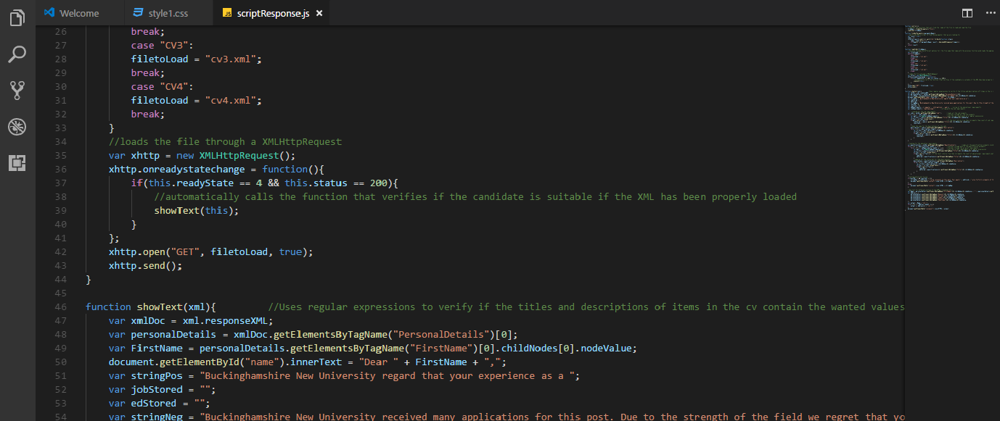

Web Developer
I love to build beautiful and functional websites in order to make information sharing better
I love to build beautiful and functional websites in order to make information sharing better
I am currently a Computing and Web Development student at Bucks New University in the United Kingdom.
I also work part-time as a Barista for a well-established coffee shop company.
I believe that in order to become the best at what we do we have to invest a lot of our free time acquiering new skills.
Most of what I know about programming and web development I learned outside of the classroom, in between shifts at work and university coursework, by completing online courses and putting it into practice.
I could say that this portfolio is on itself one of those exercises where I put into practice all that I've learned so far.
I know that there is still a lot that I need to learn to become the best, and even learning thorughout all my life I may not be able to learn it all, but I am motivated and when I put something in my head I can't rest it until it happens
This is an example of project display
This is an example of project display
This is an example of project display